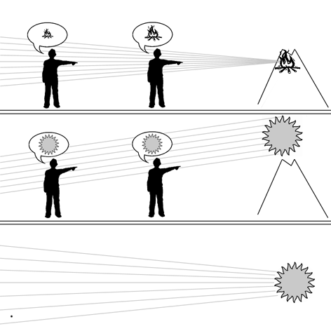

|  |
|
Top: Two people gazing at a bonfire on a hillside—the flames appears bigger and brighter to the one who is closest to them. The Classical Epicureans accounted for this by supposing that the images of earth-bound things gradually deteriorate over distance—but it modernity we recognize that light rays gradually diverge. Middle: Two people gazing at the sunset; the sun appears to be the same size and brightness, no matter where one is standing. This phenomenon led the Epicureans to assume that the images of celestial objects had a special quality which prevented deterioration. In modernity, however, we recognize that the size of the sun does not change because the sunrays reaching us travel in virtually parallel paths. Bottom: The light of the sun does indeed diverge, but not perceptibly at the scale of the Earth (represented by the dot on the left). |
(Use the BACK button of your browser to return to text)